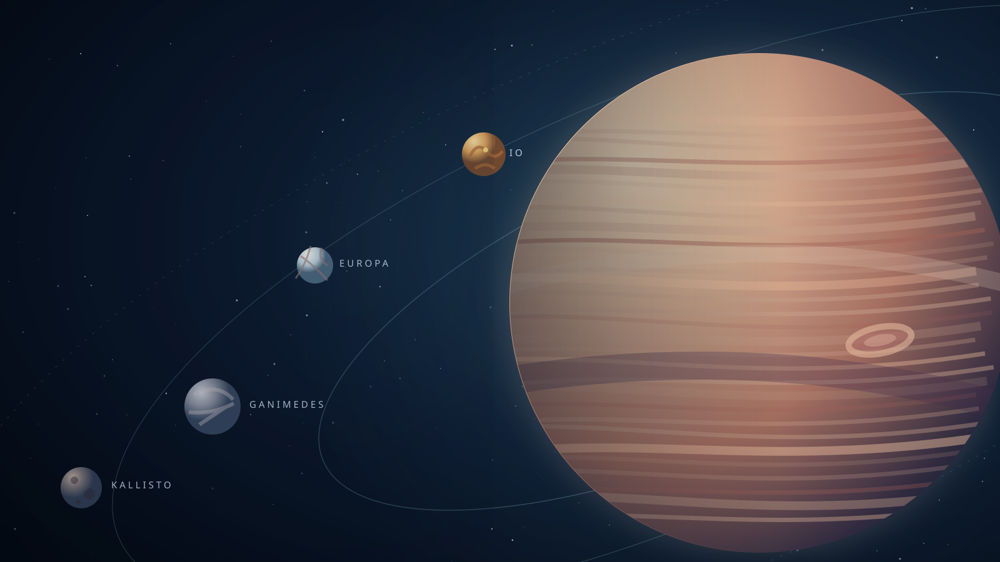

ROZDZIAŁ 08 · CZTERY KSIĘŻYCE GALILEUSZOWE
Jeden olbrzym.
Cztery światy.
Wokół Jowisza krążą miejsca, które nie powinny być do siebie podobne. Jeden księżyc płonie od środka. Drugi skrywa ocean pod lodem. Trzeci jest większy od planety Merkury. Czwarty przechowuje blizny sprzed miliardów lat. Witaj w najniezwyklejszej rodzinie księżyców Układu Słonecznego.
Małe punkty światła. Wielka zmiana myślenia.
7 stycznia 1610 roku Galileusz skierował swoją lunetę na Jowisza. Obok jasnej planety dostrzegł trzy maleńkie punkty. Wyglądały jak gwiazdy. Tyle że następnej nocy ich położenia były inne.
Astronom obserwował dalej. Wkrótce rozróżnił cztery obiekty, które zmieniały pozycje względem Jowisza, ale stale pozostawały w jego pobliżu. Doszedł do wniosku, że nie ogląda zwykłych gwiazd. Odkrył ciała krążące wokół innego świata niż Ziemia.
To był cios w wyobrażenie, że wszystko na niebie musi obiegać Ziemię. Nie był jeszcze samodzielnym dowodem na każdy szczegół systemu heliocentrycznego, ale stanowił niezwykle mocny argument przeciw takiemu prostemu obrazowi kosmosu.
Obecnie nazywamy je księżycami Galileuszowymi: Io, Europa, Ganimedes i Kallisto. Patrząc z Ziemi przez niewielki teleskop, wciąż można zobaczyć ten sam rodzaj spektaklu, który ponad cztery stulecia temu zmienił historię astronomii.
Nie wystarczy patrzeć w niebo. Trzeba jeszcze odważyć się zapytać, dlaczego punkty światła nie stoją tam, gdzie wczoraj.
Ta sama rodzina.
Żadnego podobieństwa.
Każdy z czterech księżyców powstał w otoczeniu Jowisza, a jednak różnice między nimi przypominają podróż przez zupełnie różne rozdziały geologii i fizyki.
Io
ŚWIAT OGNIANa Io ziemski wulkan wyglądałby jak skromny eksperyment. Setki wulkanów wyrzucają materię, a cała powierzchnia jest nieustannie odmładzana przez erupcje. To nie bliskość Słońca rozpala księżyc. Jowisz i sąsiednie księżyce rytmicznie odkształcają jego wnętrze grawitacją. Powstające tarcie rozgrzewa skały.
Europa
ŚWIAT OCEANUJasna lodowa powierzchnia Europy pęka w długie, ciemniejsze linie. Pod nią najprawdopodobniej rozciąga się globalny ocean słonej, ciekłej wody. Czy są w nim warunki pozwalające istnieć życiu? To pytanie, nie odkrycie życia. Europa jest jednym z najważniejszych celów współczesnej astrobiologii.
Ganimedes
ŚWIAT WŁASNEGO POLAGanimedes jest największym księżycem Układu Słonecznego, większym pod względem średnicy od Merkurego. To jedyny księżyc z potwierdzonym własnym, globalnym polem magnetycznym. Pod lodową skorupą również mogą istnieć warstwy ciekłej wody. Jest księżycem, ale ma złożoność, którą zwykle kojarzymy z planetami.
Kallisto
ŚWIAT PAMIĘCIPowierzchnia Kallisto to zapis dawnych uderzeń. Krater leży obok krateru, a niektóre ślady przetrwały niewyobrażalnie długo. Niewiele wskazuje na intensywne współczesne przekształcanie powierzchni. A jednak pomiary sondy Galileo sugerują, że także pod tą starą skorupą może ukrywać się zasolony ocean.
Gdy jeden księżyc okrąża planetę, inne liczą jego kroki.
Io, Europa i Ganimedes są połączone niezwykłym rytmem. W czasie, gdy Ganimedes wykonuje około jednego okrążenia Jowisza, Europa obiega planetę dwa razy, a Io — cztery.
To rezonans orbitalny, a nie przypadkowa zbieżność liczb. Powtarzające się oddziaływania grawitacyjne sprawiają, że orbity nie stają się idealnie kołowe. Jowisz raz nieco silniej, raz słabiej rozciąga księżyce. W ich wnętrzach powstaje ciepło pływowe.
Właśnie dlatego Io nie jest zamarzniętą bryłą skał, choć znajduje się daleko od Słońca. A Europa może utrzymywać ciekłą wodę pod lodem. Nie jest to jednak prosta zasada, że każde ciało w rezonansie musi mieć ocean lub wulkany — znaczenie ma również budowa wnętrza i historia księżyca.
Kallisto nie należy do tego rezonansu 4:2:1. Jej dłuższy okres obiegu i odmienna historia dynamiczna czynią z niej interesujący punkt odniesienia dla trzech wewnętrznych światów.
Uruchom ruch księżyców.
Przesuwaj czas albo uruchom animację. Zobaczysz, jak różne są okresy obiegu i jak szybko Io wyprzedza pozostałe światy. Nie potrzebujesz do tego silnika 3D.
Uwaga naukowa: orbity na rysunku są umownymi elipsami perspektywicznymi, a wielkości księżyców i odległości nie są zachowane w skali. Okresy obiegu odpowiadają wartościom zaokrąglonym z danych DLR. Fazy początkowe wybrano ilustracyjnie. To demonstracja różnic tempa, nie aktualna mapa nieba ani precyzyjna symulacja perturbacji i rezonansu.
„Czasem największą tajemnicą planety nie jest sama planeta, lecz to, co krąży wokół niej.”
ATLAS SOLARIS / MIĘDZY GRAWITACJĄ A MOŻLIWOŚCIĄ ŻYCIA
Wyprawy do światów, których jeszcze nie znamy.
Galileusz miał lunetę. My wysyłamy laboratoria przez setki milionów kilometrów. Najważniejsza zmiana polega jednak na tym, że umiemy zadawać dokładniejsze pytania.
Czy Europa może sprzyjać życiu?
Sonda wystartowała 14 października 2024 roku. Planowane dotarcie do układu Jowisza przypada na kwiecień 2030 roku. Statek ma wykonywać wielokrotne bliskie przeloty obok Europy, badając skorupę lodową, ocean i skład materii. Nie jest to misja ogłoszona jako bezpośrednie poszukiwanie żywych organizmów, lecz poszukiwanie warunków sprzyjających życiu.
Jak działają lodowe światy olbrzyma?
Europejski JUICE wyruszył 14 kwietnia 2023 roku, a planowany przylot do Jowisza to lipiec 2031 roku. Misja zbada przede wszystkim Ganimedesa, Kallisto i Europę, ich wnętrza, środowisko magnetyczne i historię. Docelowo ma prowadzić także obserwacje z orbity Ganimedesa.
Teraz zbliż się do Jowisza.
Artykuł opowiada o świecie czterech księżyców. Oryginalne laboratorium ATLAS SOLARIS pozwala wejść w przestrzeń Jowisza i przełączać się między Io, Europą, Ganimedesem i Kallisto. Uruchomimy je dopiero wtedy, kiedy zechcesz — bez obciążania strony podczas czytania.
Pełny silnik 3D działa jako odrębne doświadczenie. Wczesne etapy ATLAS SOLARIS wykorzystują tematyczne widoki aktualnego silnika, a nie archiwalne kopie pierwotnych wersji.
Za zachwytem stoją dane.
Historia, średnice, okresy obiegu i opis misji zostały oparte na opracowaniach agencji badawczych. Oddzielam obserwacje od hipotez: istnienie możliwych oceanów nie oznacza odkrycia życia.
- NASA — Jupiter MoonsOgólny opis księżyców Galileuszowych, odkrycia z 1610 roku i ich różnic.
- NASA — Io FactsAktywność wulkaniczna, grzanie pływowe i historia obserwacji.
- NASA — EuropaDowody na ocean pod lodem oraz naukowe pytania o warunki do życia.
- NASA — Ganymede FactsWielkość, własne pole magnetyczne i rezonans 4:2:1.
- NASA — CallistoStara, kraterowana powierzchnia i możliwy podpowierzchniowy ocean.
- DLR — The large moons of JupiterPromienie, masy, gęstości, odległości i okresy orbitalne czterech księżyców.
- NASA — Europa ClipperStart 14 października 2024 r., cel badań i planowany przylot w 2030 r.
- ESA — JuicePlan misji: start w kwietniu 2023 r., przylot do Jowisza w lipcu 2031 r.
ATLAS SOLARIS / ETAP 08. Okładka i portrety księżyców są ilustracjami artystycznymi, nie fotografiami. Laboratorium orbitalne 2D wykorzystuje uproszczony ruch okresowy na schematycznych orbitach i nie oblicza efemeryd. Obecność oceanu na Europie ma mocne podstawy obserwacyjne; szczegóły jego struktury pozostają przedmiotem badań. Misje opisano według harmonogramów agencji dostępnych w listopadzie 2026 roku.